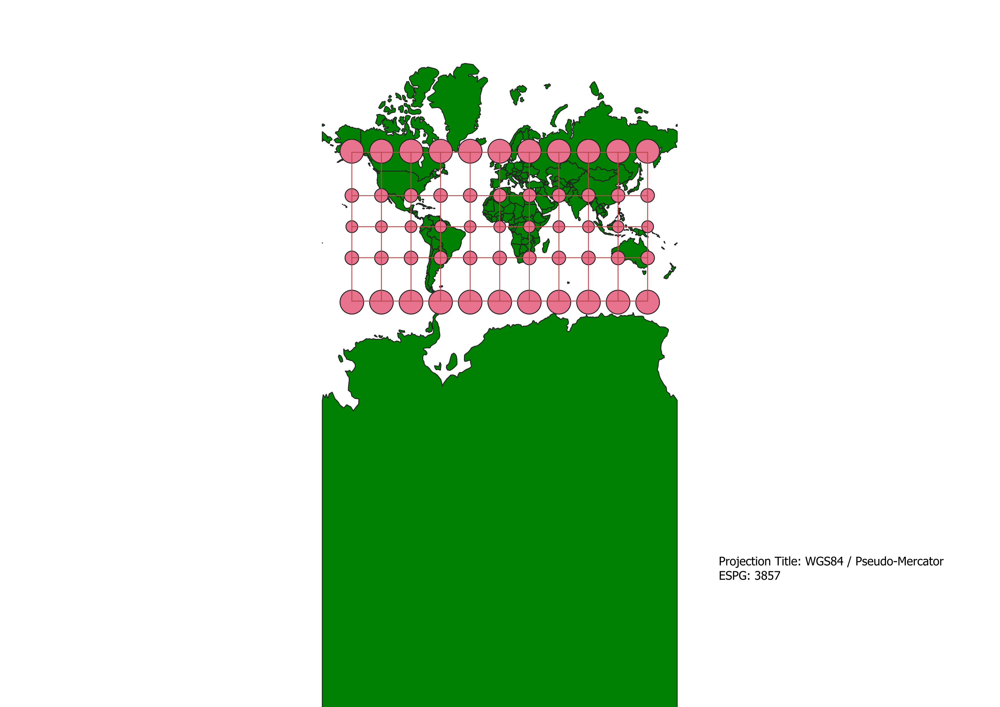
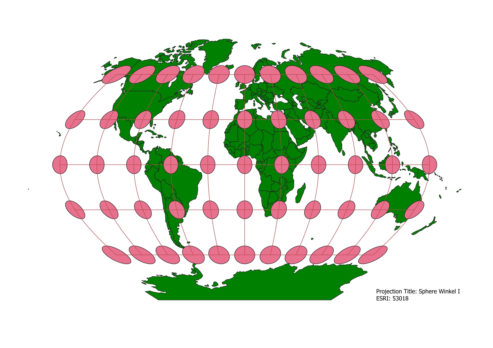
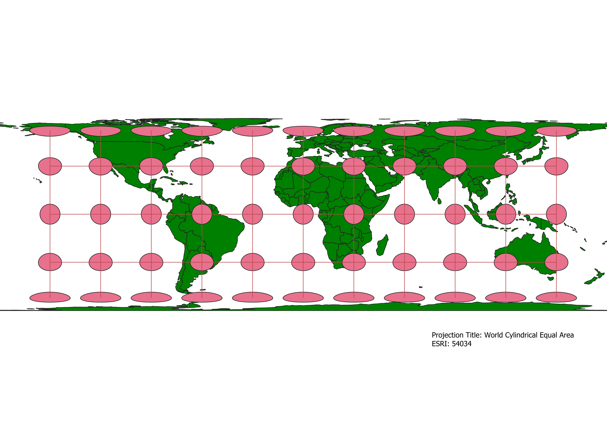
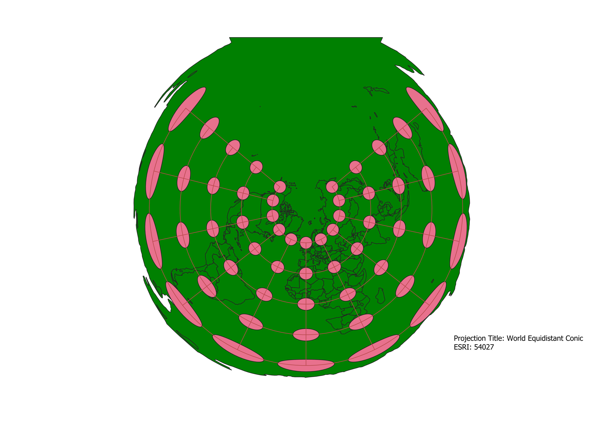
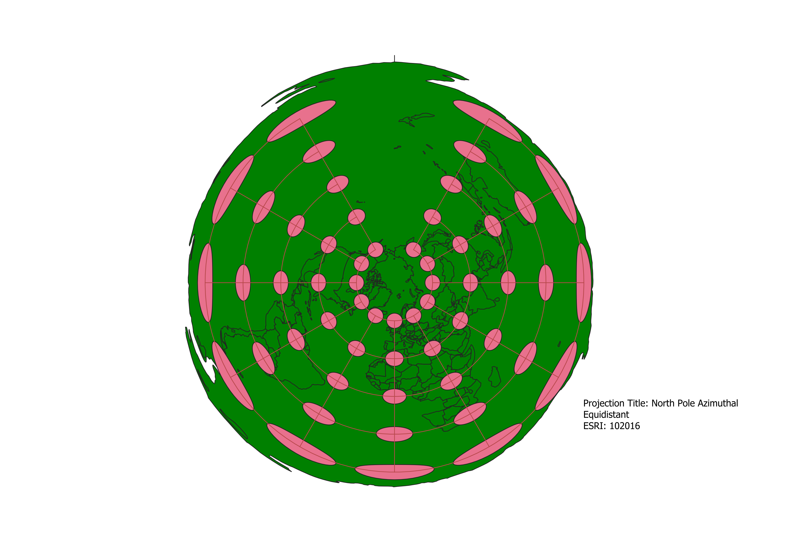
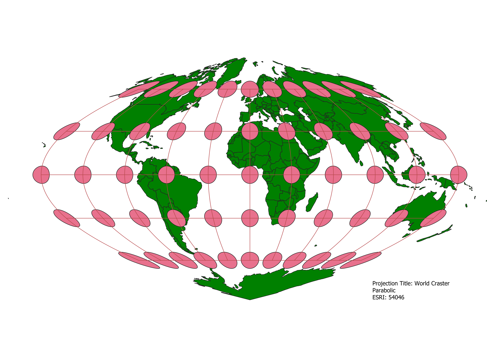
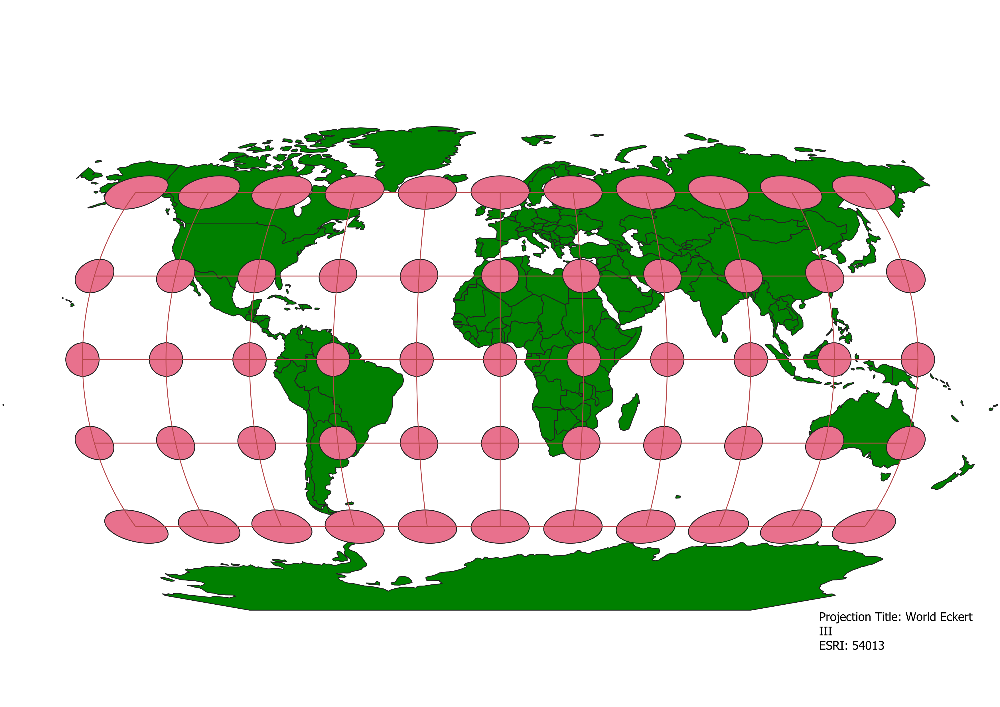

In this project I learned how to display images in different projections
To create these maps I installed and applied the Globe Builder QGIS plugin to set a world basemap and the Indicatrix mapper to demonstrate imperfections in these different displays in showcasing world shape and area. I then used the Coordinate Reference System to search for specific projections and apply them to my QGIS map.
WGS84 Projection
This map focuses on preserving correct area which is shown by the equal distance between each and every circle. In doing this the map sacrifices shape which you can see in the outermost circles being more ovals than circles.

Aitoff Projection
Some observations

WGS84 / Pseudo-Mercator Projection
Some observations

Sphere Winkel I
Some observations

World Cylindrical Equal Area
Some observations

World Equidistant Conic
Some observations

North Pole Azimuthal Equidistant
Some observations

World Craster Parabolic
Some observations

World Eckert III
Some observations

Now, you should add the following projections on your own:
EPSG: 3857, 53018, 54034, 54027, 102016, and two additional projections that you choose.
Data used for this project
Download Natrual Earth 1:10m Cultural Vector